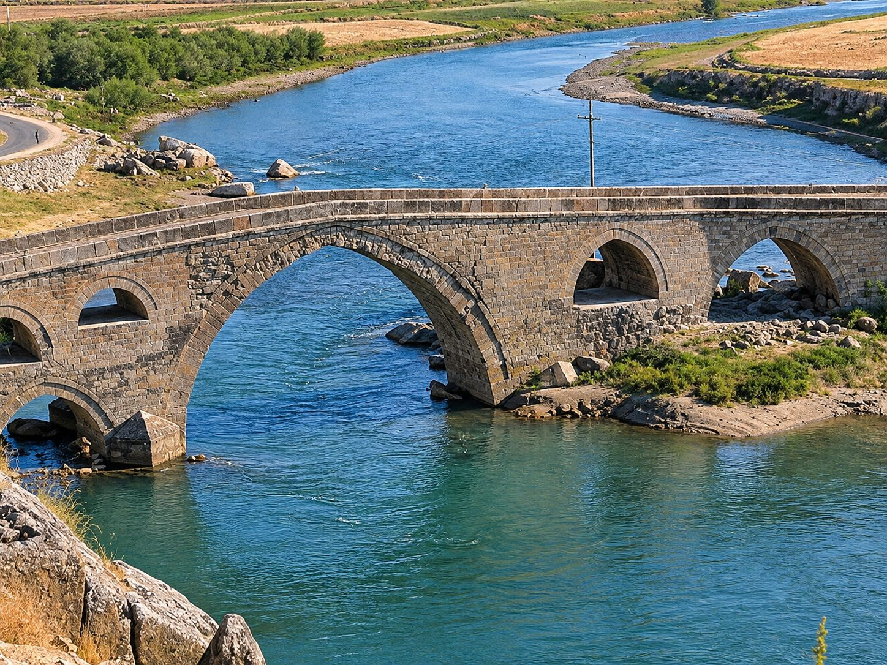

Köyden Canlı Görüntü
Haberler
Yükleniyor…
Açılışımızdan Fotoğraflar
Yükleniyor…
Köyden İlanlar
Yükleniyor…
Köy Takvimi
Bu ayın günleri
Resmî ve dinî günler Ocak 2026 – Aralık 2027 arası için girilmiştir.
Pazar ve Yardım İlanları
İlan verKöyümüzden satılık ürünler, aranan şeyler ve yardım talepleri. İlanlar dernek onayından sonra yayınlanır.
Yükleniyor…
Hakkımızda
Köprüköy Çeşnigir Kültür Sosyal Yardımlaşma ve Dayanışma Derneği
Köyümüz Köprüköy
Kırıkkale'nin Keskin ilçesine bağlı Köprüköy, adını Kızılırmak üzerindeki tarihi Çeşnigir Köprüsü'nden alır.
- Konum
- Kapulukaya Baraj Gölü'nün doğu kıyısı
- İlçe merkezine uzaklık
- Keskin'e yaklaşık 30 km
- Rakım
- 760 m
- Nüfus
- 630 (2022)
- Ankara'ya uzaklık
- yaklaşık 113 km
- Geçim
- Tahıl, şeker pancarı, ayçiçeği; kümes hayvancılığı; balıkçılık
Tarihçe
Köprüköy'ün Selçuklu döneminde kurulduğu kabul edilir. Köye adını veren Çeşnigir Köprüsü kesme taştan yapılmıştır; 110 metre uzunluğunda, 6 metre genişliğindedir ve dokuzu ana, üçü boşaltma gözü olmak üzere on iki gözlüdür. Uzun yıllar Ankara, Bala, Kaman ve Kırşehir yolunun Kızılırmak geçişi olmuştur.
"Çeşnigir" Osmanlı sarayında padişahın yemeklerini tadan görevlinin unvanıdır; köprüye bu adın neden verildiği kesin olarak bilinmiyor. Osmanlı döneminde köprü, yol güvenliği için kurulan derbend (geçit tutma) sisteminin Anadolu'daki önemli merkezlerinden biriydi.

Köprü, Anadolu Selçuklu döneminde yapılır. Kesin yapım tarihi ve yaptıranı bilinmiyor.
Rivayete göre Timur'un ordusu Ankara Savaşı'na giderken Kızılırmak'ı bu köprüden geçer.
Kaynaklar köprünün Yavuz Sultan Selim'in Mısır Seferi hazırlıkları sırasında yenilendiğini ve bu işin Mimar Sinan'a atfedildiğini aktarır.
Köprüköy belde olur. Bu statü 2013'teki düzenlemeyle sona erer.
Kapulukaya Barajı'nın suları yükselir, köprünün bazı ayakları su altında kalır ve köprü araç trafiğine kapanır.
Karayolları 4. Bölge Müdürlüğü köprüyü restore eder. Bugün yalnızca yayalara açıktır.
Kırıkkale Valiliği'nin çalışmalarıyla Çeşnigir Kanyonu turizme kazandırılır: seyir terası, tekne turu ve yürüyüş parkuru yapılır.
Kaynak: Vikipedi, Çeşnigir Köprüsü · Vikipedi, Köprüköy · KÜRE Ansiklopedi · Yeni Ankara
Gezilecek Yerler

Yükleniyor…
Konum
Köprüköy, Kızılırmak üzerindeki Kapulukaya Baraj Gölü'nün doğu kıyısında, D.260 karayolu üzerindedir. Çeşnigir Köprüsü köyün hemen batısında, karşı kıyıdaki Karakeçili ile köy arasındadır.
- Adres
- Köprüköy, Keskin / Kırıkkale
- Koordinat
- 39°35′ K, 33°26′ D
- Keskin'e
- yaklaşık 30 km
Harita şematiktir, ölçekli değildir.
Finansal Durum
Yükleniyor…